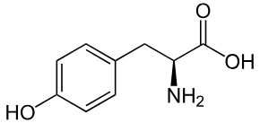

Tyrosine chemical properties=Tyrosine is an amino acid with the chemical formula C9H11NO3. Structure: Tyrosine contains an aromatic ring and a hydroxyl group (-OH), making it a polar, hydrophilic amino acid. pKa Values: It has three pKa values: The carboxyl group (pKa ~2.2) The amino group (pKa ~9.1) The phenolic hydroxyl group (pKa ~10.1) Solubility: Tyrosine is soluble in water due to its polar nature but less soluble in organic solvents. Reactivity: The hydroxyl group allows for various reactions, including phosphorylation and interactions with other biomolecules.
Tryptophan chemical properties=Tryptophan is classified as a large, aromatic amino acid, featuring an indole side chain. Its molecular formula is C₁₁H₁₂N₂O₂ Chemical Structure: Tryptophan is classified as a large, aromatic amino acid, featuring an indole side chain. Its molecular formula is C₁₁H₁₂N₂O₂. Essential Amino Acid: It cannot be synthesized by the human body and must be obtained through diet. Precursor for Neurotransmitters: Tryptophan is a precursor to serotonin, a neurotransmitter that regulates mood, sleep, and appetite. It also converts into melatonin, which regulates sleep-wake cycles. Role in Protein Synthesis: Like other amino acids, tryptophan is a building block for proteins. Absorption and Metabolism: Tryptophan is absorbed in the small intestine and can be converted into several bioactive compounds, including serotonin and niacin vitamin B3

Glutamate, specifically monosodium glutamate (MSG), is a flavor enhancer widely used in food processing and cooking. Glutamate, in general, also plays important roles in biochemistry and medicine.
- Here are some applications:-
- Food industry i)Flavour Enhancer: Glutamate is primarily used as a flavor enhancer to provide a savory, umami taste. It is commonly added to foods like soups, broths, processed meats, snacks, canned vegetables, and seasoning mixes
- Biotechnology and Industrial Uses i)Production of other amino acids: Glutamate is a precursor in the biosynthesis of other amino acids and important biomolecules. It is involved in the fermentation processes used to produce a wide range of amino acids.
ii)Unami taste: The fifth basic taste, umami, is linked to the presence of glutamate. This taste is commonly found in foods such as tomatoes, cheese, mushrooms, and soy sauce. MSG is often added to amplify this natural flavor.
iii)Salt reduction: MSG is used as a sodium-reduced alternative to regular salt because it can enhance flavor with lower sodium content. This is especially useful in processed foods where sodium intake is a concern.
ii)Microbial Fermentation: The industrial production of MSG is done through fermentation processes, where microorganisms such as Corynebacterium glutamicum or Brevibacterium flavum are used to produce glutamate at a large scale.
- Chemical properties:-
- Molecular formlua Glutamic acid:C₅H₉NO₄
- Acid Base properties Glutamate is a diprotic acid, meaning it has two dissociable protons.
- pKa values The pKa for the α-carboxyl group is around 2.1.
- Solubility Glutamate is water-soluble due to its ionic and polar functional groups. (especially the carboxyl groups)It is soluble in basic solutions but less soluble in acidic conditions due to protonation of the carboxyl groups.
The first proton dissociates from the α-carboxyl group (-COOH), making the molecule a carboxylate anion (COO⁻).
The second proton dissociates from the γ-carboxyl group (-COOH) at higher pH, resulting in the formation of glutamate's zwitterionic form (which is the charged form found in biological systems).
The pKa for the γ-carboxyl group is about 4.3.
The pKa for the amino group is approximately 9.7.

Histidine is an essential amino acid with unique chemical properties due to its imidazole side chain, making it particularly important in biochemical processes. Below are its key chemical properties:
- General structure Chemical Formula: C6H9N3O2
- Acid-Base properties 1.pKa values: Carboxylic acid:1.8
Molecular weight:155.15 g/mol
Amino group:9.2
Imidazole side chain:6.0